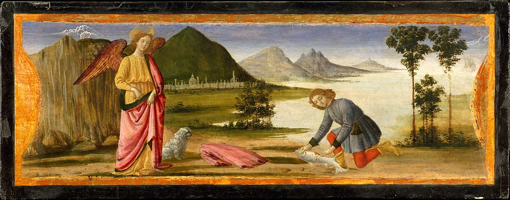

<head>
<meta charset="UTF-8" />
<meta name="keywords" content="drawing, painting" />
<meta name="description" content="drawings by Sunjy" />
<title>Sunjy</title>
<link rel="shortcut icon" type="image/x-icon" href="../../mImages/mCommon/favicon.ico" media="screen" />
<link rel="stylesheet" type="text/css" href="../../mCsses/mCommon/mCssA.css" />
<link rel="stylesheet" type="text/css" href="../../mCsses/mCommon/mCssB.css" />
<link rel="stylesheet" type="text/css" href="../../mCsses/mCommon/mCssC.css" />
<link rel="stylesheet" type="text/css" href="../../mCsses/mCommon/mCssD.css" />
<link rel="stylesheet" type="text/css" href="../../mCsses/mContent/mCssA.css" />
<link rel="stylesheet" type="text/css" href="../../mCsses/mContent/mCssB.css" />
<link rel="stylesheet" type="text/css" href="../../mCsses/mContent/mCssC.css" />
<link rel="stylesheet" type="text/css" href="../../mCsses/mContent/mCssD.css" />
</head>
<script type="text/javascript" src="../../mScripts/mContent/mContentAA.js" /></script>
<script type="text/javascript" src="../../mScripts/mContent/mContentAB.js" /></script>
<script type="text/javascript" src="../../mScripts/mContent/mContentAC.js" /></script>
<script type="text/javascript" src="../../mScripts/mContent/mContentAD.js" /></script>
<script type="text/javascript"></script> 
<script type="text/javascript">
document.write('<div class="mImgAbsolute"></div>');
/*
document.write('<p class="mFontSizeBColor" />From a white paper...</p>');
document.write('<table class="center"><tr><td>');
document.write('');
document.write('</td></tr></table>');
*/
</script>


<script type="text/javascript">
document.write('<p class="mFontSizeBColor" />Tobias and the Angel</p>');
document.write('<p class="mFontSizeSColor" />By Davide Ghirlandaio (David Bigordi), ca. 1479. Davide Ghirlandaio painted these three enchanting scenes about 1479 for the base (predella) of an important altarpiece commissioned from his brother, Domenico, for the church of San Giusto alle Mura outside Florence. Two further scenes are known; the main panel is in the Uffizi in Florence.<br><br>According to legend, at the burial of Saint Zenobius a dead tree sprang to life when it was touched by the saint&#39;s bier. The baptistery and campanile of the cathedral of Florence provide the setting. Florence appears in the background of the scene where Tobias catches a fish whose innards will heal his father’s blindness.</p>');
document.write('<table class="center" /><tr><td>');
document.write('<br>According to legend, at the burial of Saint Zenobius a dead tree sprang to life when it was touched by the saint&#39;s bier. The baptistery and campanile of the cathedral of Florence provide the setting. Florence appears in the background of the scene where Tobias catches a fish whose innards will heal his father’s blindness." />');
document.write('</td></tr></table>');
</script>


